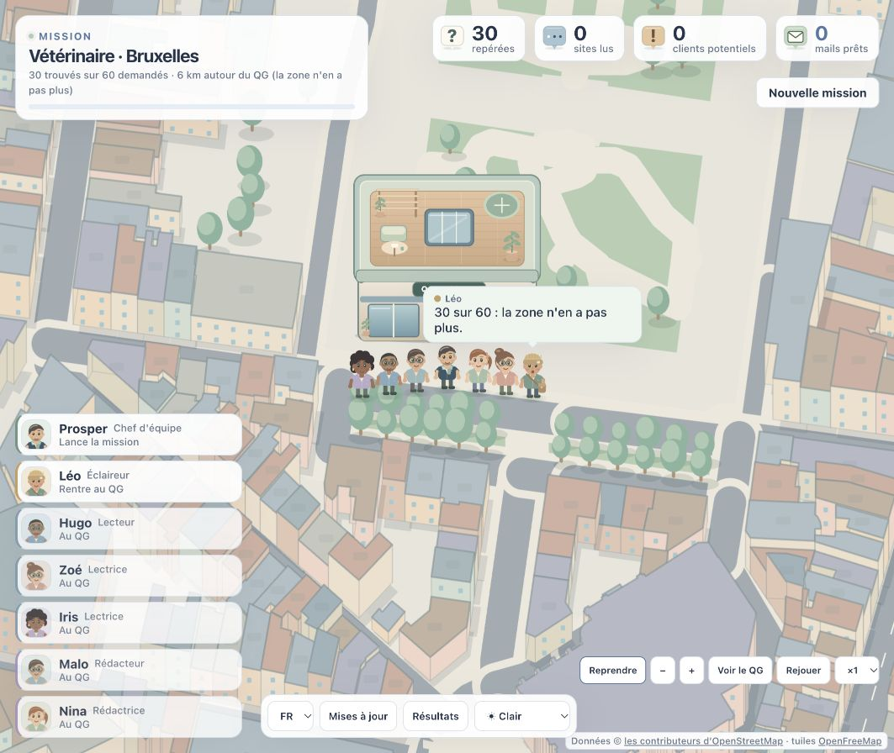

Choisissez votre terrain.
Bruxelles, Amsterdam, Luxembourg… Léo repère les commerces de votre secteur dans la zone choisie, avec OpenStreetMap.
Confiez votre recherche à Prosper. Son équipe explore les commerces du Benelux, lit leurs sites et prépare un premier contact pour chacun. Vous les voyez avancer. Vous décidez de la suite.
UNE ÉQUIPE, PAS UNE LISTE À TRIER
Une ville, un métier, votre offre. Prosper organise la recherche ; vous gardez la main sur chaque rencontre.
Bruxelles, Amsterdam, Luxembourg… Léo repère les commerces de votre secteur dans la zone choisie, avec OpenStreetMap.
Hugo, Zoé et Iris visitent les sites publics. Ils relèvent les contacts et les observations utiles, avec un score expliqué pour chaque commerce.
Malo et Nina préparent des mails à partir de votre offre et de chaque commerce. À la fin, une fenêtre rassemble les prospects et leurs brouillons.
Et l’envoi ? C’est vous qui décidez. Relisez, modifiez, validez ou refusez chaque brouillon. Prosper n’envoie aucun mail automatiquement.
Comment ça fonctionne ↗FAITES CONNAISSANCE
Un chef d’équipe, un éclaireur, trois lecteurs et deux rédacteurs. Chacun a son rôle et sa place sur la carte.
LE QG, SOUS VOS YEUX
Suivez un personnage, explorez la carte, ouvrez une fiche ou retrouvez tous les résultats. En mode clair comme de nuit.

FAITES ENTRER L’ÉQUIPE
Node.js 22.13 ou plus récent et Git sont nécessaires. Pour préparer les mails, connectez Claude Code ou Codex. L’analyse seule fonctionne sans assistant.
Copiez cette commande dans votre terminal. Choisissez ensuite le disque ou le dossier où installer Prosper.
curl -fsSL https://raw.githubusercontent.com/renaud-bxl/prosper-et-les-prospects/main/install.sh | shLe choix du disque et la confirmation du dossier se font dans votre terminal.
Lire les instructions sur GitHub ↗Vos missions, réglages et brouillons restent sur votre ordinateur. Les assistants de rédaction utilisent le service auquel vous êtes connecté.
ET ENSUITE ?
Les installations Git sont prévenues des nouvelles versions. Un bouton lance la mise à jour, en conservant vos données et réglages.
AVANT DE PARTIR
Non. Prosper prépare des brouillons. Vous pouvez les modifier, les valider, les refuser ou les copier. L’envoi se fait depuis votre messagerie.
Claude Code ou Codex, connectés sur votre ordinateur, rédigent les mails. Cursor peut développer et démarrer le projet ; il n’est pas un moteur de rédaction intégré.
L’interface est en français, néerlandais et anglais. Choisissez séparément la langue des mails, ou laissez l’équipe suivre celle déclarée par le site du commerce.
Une installation Git sur la branche main vérifie les nouveautés au démarrage puis périodiquement. Cliquez sur Mettre à jour : Prosper prépare la nouvelle version, redémarre et conserve votre configuration et votre base locale.
Les commerces viennent d’OpenStreetMap. Les lecteurs examinent leurs sites publics et conservent les contacts et observations relevés. Vérifiez les informations : un site peut être incomplet ou inaccessible.
Deux applications de la même famille. Oscar organise vos projets dans son bureau ; Prosper explore le Benelux pour préparer vos prochains contacts. Elles partagent un univers illustré et les mêmes couleurs.
Rencontrer Oscar ↗